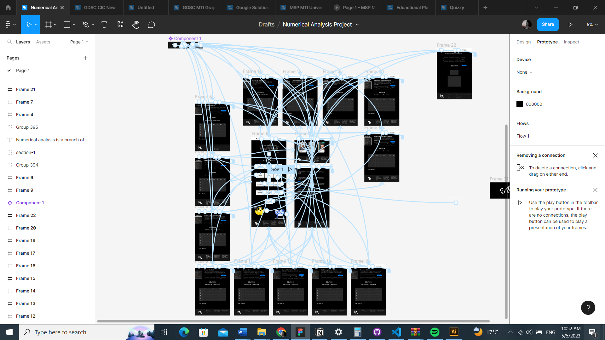

Introduction
This website is a Numerical Analysis Methods Solver using some of web developing technologies and UI/UX design tools. We divide our process on working on this Numerical Analysis project according to the software engineering, And go on this process according to our timeline.
Analysis
In the first we look to the Numerical Analysis which divided into two types in this project which are Chapter 1 Finding Root of Polynomial Equation & Chapter 2 Linear Algebric Eqaution. so we design two types of pages for the solving problems one for ch1. and the other for ch.2. And bulid other pages to make this website much integrated as the home page which is the landing page that the user can start from to reach any numerical method he want easly. And Team page that introduce team members worked on this project their photos, names, id and groups. Finally we bulid this page which is a bulit in documentation that simply described our project and process.
Design
This website is a Numerical Analysis Methods Solver using some of web developing technologies and UI/UX design tools. We divide our process on working on this Numerical Analysis project according to the software engineering, And go on this process according to our timeline.
Implementation
This website is a Numerical Analysis Methods Solver using some of web developing technologies and UI/UX design tools. We divide our process on working on this Numerical Analysis project according to the software engineering, And go on this process according to our timeline.